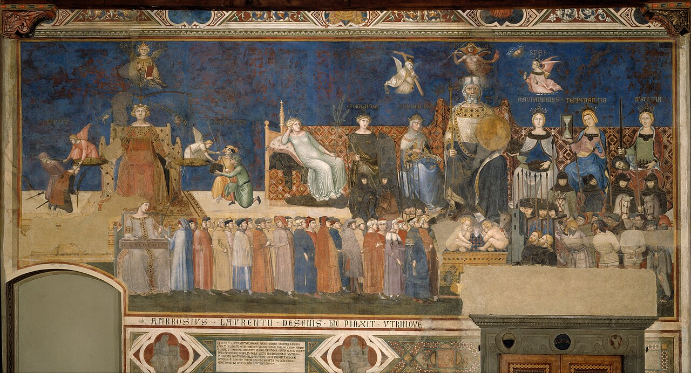

AEGIS: typed evidence and obligations for AI-native enterprise architecture

Enterprise architecture is the discipline that aligns an organisation’s business strategy with its information assets, applications, and technology. Two open standards govern the field. TOGAF defines a lifecycle. ArchiMate defines a modelling language. Both assume systems that behave predictably. Both assume governance happens in periodic review meetings. Both assume an architecture document stays accurate for months after it is written.
AI-native systems break these assumptions. A deployed language model produces different outputs for similar inputs. An autonomous agent calls tools in situations it has not seen during testing. A retrieval-augmented pipeline changes what it knows every time new documents are ingested. When such a system decides on credit, hiring, or infrastructure configuration, a static diagram cannot tell you whether the system still meets its regulatory obligations. That question needs checking that runs continuously and that a machine can perform.
The regulatory pressure is concrete. The EU AI Act entered into force in August 2024. Its rules for high-risk systems become enforceable from August 2026 (European Parliament and Council of the European Union 2024). ISO/IEC 42001, the management-system standard for AI, asks for a traceable index that links each obligation to the specific processes and documents that satisfy it. The NIST AI Risk Management Framework names traceability as a core property of trustworthy AI. Current enterprise architecture tools do not produce this kind of evidence at the level of detail or at the speed these rules expect.
The idea
AEGIS is a framework that sits one layer above existing architecture tools. The name stands for Architecture with Evidence, Governance, Intent, and Safety. The core move is simple to state. AEGIS makes evidence and obligations into things you can model directly, the same way TOGAF and ArchiMate already let you model services and data. Once an obligation is a modelled object, a machine can ask whether the evidence for it is still valid. Once that check is automatic, it can run all the time.
The paper makes three contributions. It defines the new building blocks and how they attach to existing architecture models. It replaces the periodic review cycle with a continuous one. It maps the new building blocks to actual regulation, so a conformance report can be generated rather than written by hand.
The new building blocks
AEGIS introduces seven kinds of object. Each one names something that governance of an AI system needs but that current architecture languages cannot express.
- Evidence is a record that something is true, stamped with who issued it, when it was issued, and when it expires. Evidence can be valid, expired, superseded, or revoked.
- Obligation is a requirement placed on part of the system, such as “this service must keep an audit log”. An obligation says what must be true, what would prove it, and which regulation it comes from.
- Policy is a named, versioned bundle of obligations.
- Risk is a structured record of something that could go wrong, linked to the obligations meant to control it.
- RuntimeSignal is an event from a running system, such as an enforcement log or an audit result. Once it is linked to the right part of the model, it becomes a piece of evidence.
- Exception is a recorded, time-limited waiver from an obligation, with a reason and an owner.
- ArchitectureDecisionRecord is the record of a design decision, made queryable so the obligations and risks behind a choice stay attached to it.
These objects connect to the services, agents, and data assets you already model. AEGIS is built as an extension, so existing architecture models do not need to be redrawn.
The rule that does the work
One simple rule drives everything. A part of the system that is required to do something is in violation the moment there is no unexpired evidence that it is doing it. The framework checks this rule continuously rather than at review time.
A short example shows why this matters. A service is required to keep personal data from leaving the organisation unless a redaction step has run first. This requirement comes from the EU AI Act. A piece of evidence confirms the redaction step works, and that evidence is set to expire on a fixed date. The day after it expires, the rule fires on its own. The service is now in violation, a signal is raised, and the responsible owner is notified. No one had to remember to re-check.
The same idea gives a health score for any part of the system. The score is the share of a part’s mandatory obligations that currently have valid evidence behind them. When the score drops below a set level, the framework re-checks the affected area and refreshes whatever has gone stale.
What this lets you catch
The paper shows three things the framework can do that current tools cannot. None of these are measured on a live system. They are demonstrations of what the model can express.
It can express every control in the ISO/IEC 42001 standard as a checkable obligation, so a conformance report becomes a query rather than a manual exercise.
It can catch three ways governance silently drifts. Evidence can expire without anyone re-checking it. A rule enforced at the level of an individual agent can be changed while the organisation-wide policy is not, so the two no longer agree. A regulation can be updated so that an obligation now points at an old version of the law. Today’s architecture diagrams and code-level checks miss all three.
It can pull the rules enforced on individual AI agents up to the organisation level and show where two agents’ rules conflict with each other, a conflict that is invisible when each agent is governed on its own.
Limits
The three demonstrations show what the model can represent. They do not report results from a deployed system. The mapping to regulation covers the EU AI Act and ISO/IEC 42001. Other regimes, such as GDPR or medical-device rules, would need their own mappings. The reasoning engine behind the checks has not been tested at the scale of a large organisation. A full working implementation is the main piece of future work, and a real evaluation against existing tools depends on building it first.
Read the paper
The full paper, with the formal model and the complete regulatory mapping, is here: AEGIS (PDF and details).